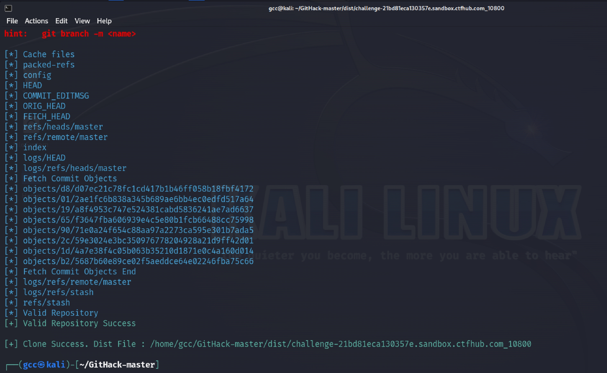
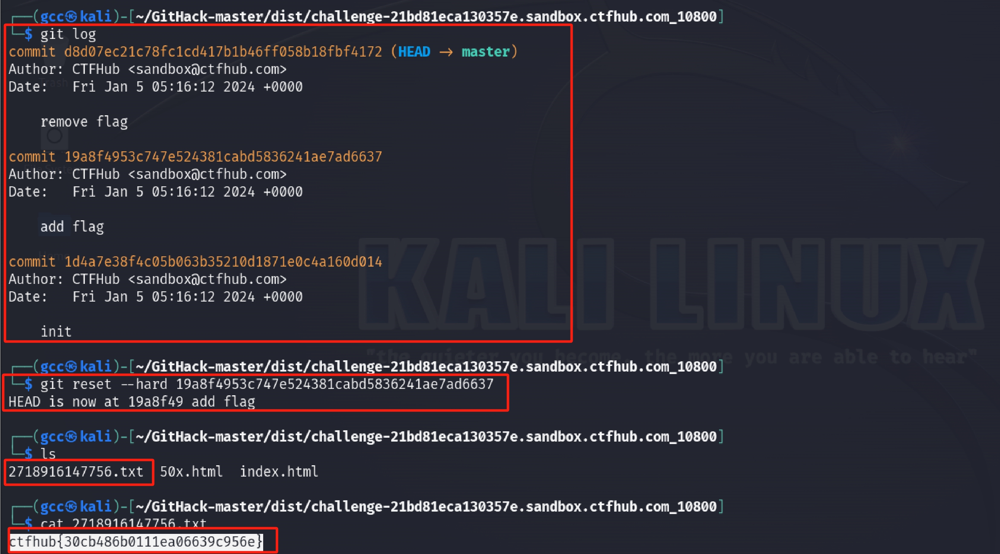
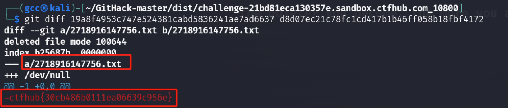
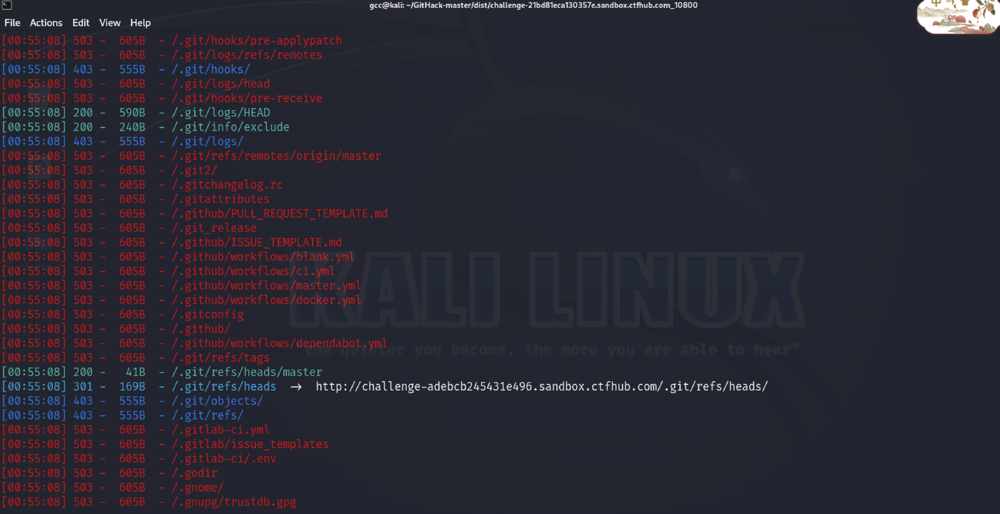
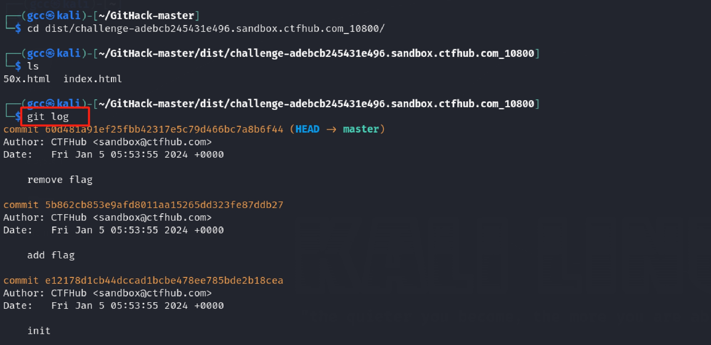
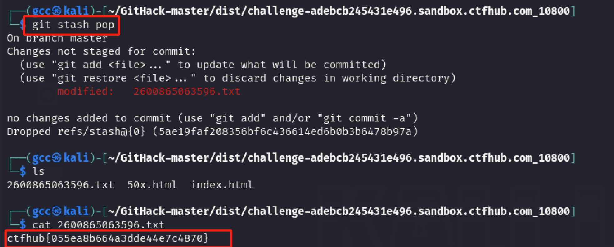
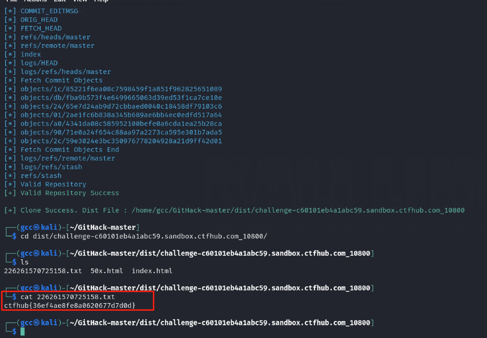

git泄露
log
0x01 前置知识
git操作
1 | # git log |
0x02 wp
题目提示：当前大量开发人员使用git进行版本控制，对站点自动部署。如果配置不当,可能会将.git文件夹直接部署到线上环境。这就引起了git泄露漏洞。请尝试使用BugScanTeam的GitHack完成本题
一般先扫描网站，如果发现存在.git目录，说明存在Git泄露，那么就可以使用githack下载泄露的源码
首先dirsearch扫描目录，发现存在git泄露信息

根据提示，下载GitHack工具，可利用.git泄漏来还原历史版本
需要注意的是，该工具只能在python2下运行
1 | ┌──(gcc㉿kali)-[~/GitHack-master] |

恢复后的文件保存在disk目录下
1 | # 查看历史记录 |
结果如下图

1 | # 方法二 |

Stash
0x01 前置知识
当在dev分支开发过程中，如果在工作区正在修改代码，直接切换到master分支的话，modified会改变master分支中文件，因此需要先用git stash命令将dev分支工作区修改的内容暂存起来。然后再修改bug，提交，最后到master合并。合并完成后git stash pop出栈，继续dev开发工作。
1 | git stash #封存工作区修改代码的内容 |
0x02 wp
dirsearch扫描目录，发现存在git泄露信息

git log查看历史记录

1 | # 对比两种状态 |

结合标题叫stash，则结合相关stash命令，使用git stash pop命令出栈，得到flag

Index
0x01 前置知识
.git目录文件结构，这里仅列出我们 git还原时需要的重点目录和文件：
├── HEAD — 当前 branch 指针。一般指向 refs/heads/ 里的 branch
├── index — 当前branch 项目文件的 map
├── logs — 日志目录
│ ├── HEAD — 日志记录
├── objects — 项目文件目录
│ ├── info — pack文件指针（通常在客户端）
│ └── pack — pack文件目录
└── refs — branch 和 tags 目录
├── heads — 存放各个 branches 的指针
├── stash — 存放 stash文件
0x02 wp
这关更简单，用githack恢复后，文件目录下就出现了一个包含flag的txt文件
